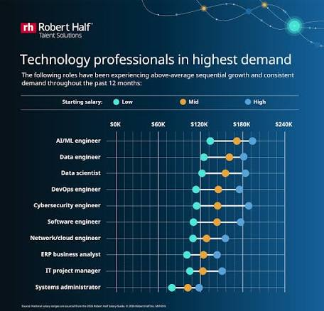

Market

The Market for information technology project managers is very large.
Currently the projected demand is going to be 8% more openings in 10 years.
Its also projected to be a growing field, growing much more than average.
The Numbers
| Currently | 10 Years From Now | Annual Growth Rate |
|---|---|---|
| There are 472,000 information technology project managers employed as of 2024. | Its projected to be 510,000 information technology project managers employed in 10 years. | According to careeronestop.org, the field is projected to grow by 8% over the next decade. Meaning there will be 31,300 new positions every year. |
© April Nierenberg 2026. Made 100% by Human Hands.